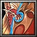

傳說中的"雷神的化身"立花道雪，當他的父親臥病在床時，立花道雪代父出征，這是他的初陣。據說立花道雪率領為數僅僅三千的軍隊連夜趕到敵人城下，翌晨發動猛攻，不出一天便把城池攻下。立花道雪的初陣，一場石破天驚的初陣，名震天下。 智慧型遠戰英雄
法術 ：Ａ 輔助 ：Ｓ 最擅長一對多，破塔，輔助進攻 敏捷：23+1.80 智慧：36+3.60（主要） 
Ｗ[切換] 禦魔之盾 將禦魔之盾高舉而獲得魔法免疫，並減少[5/10/15/20]%穿刺傷害，[80/70/60/50]%攻擊速度及80%移動速度。 Ｅ[主動] 雷電桎梏 綁住距離600內的指定目標，讓它無法進行任何動作並每秒造成150點傷害。 需持續施法，最多可持續[1/2/3/4]秒。 消耗法力[120/140/160/180]，等待時間22秒。 Ｒ[主動] 雷霆閃電 消耗法力[100/120/140/160]，等待時間9秒。
|